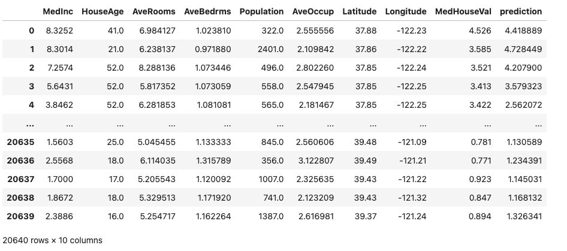

Model Wrappers#
Modeva provides a flexible way to wrap predictive models in scikit-learn style, arbitrary format, and pseudo model with only data inputs and scores. Below are these wrapper classes for both classification and regression models:
modeva.models.MoSKLearnClassifier: scikit-learn style classification model wrapper
modeva.models.MoSKLearnRegressor: scikit-learn style regression model wrapper
modeva.models.MoClassifier: arbitrary classification model wrapper
modeva.models.MoRegressor: arbitrary regression model wrapper
modeva.models.MoScoredClassifier: scored classification model wrapper
modeva.models.MoScoredRegressor: scored regression model wrapper
In this tutorial, we provide a demonstration of wrapping Sklearn models by using the convenient APIs in modeva.models.wrappers.api.
Sklearn Model Wrapper#
Scikit-learn provides a popular framework for machine learning models in Python. Modeva can wrap any scikit-learn model into the pipeline, by the following steps:
Having the data and Sklearn model ready
Wrapping the data into Modeva DataSet
Wrapping the Sklearn model into Modeva format
Ready to use Modeva modules for model validation
Below is an example of the regression dataset (fetch_california_housing) and a deep learning model (MLPRegressor) from Scikit-learn.
1. Prepare external data and model#
## Pre-building a ScikitLearn-style Model
import numpy as np
from sklearn.datasets import fetch_california_housing
from sklearn.model_selection import train_test_split
from sklearn.neural_network import MLPRegressor
data = fetch_california_housing()
train_idx, test_idx = train_test_split(np.arange(data.data.shape[0]),
test_size=0.2, random_state=42)
SkMLP = MLPRegressor(hidden_layer_sizes=[20]*4, activation="tanh",
random_state=42)
SkMLP.fit(data.data[train_idx], data.target[train_idx])
2. Wrapping data into Modeva#
import pandas as pd
from modeva import DataSet
ds = DataSet()
ds.load_dataframe(pd.concat([pd.DataFrame(data.data, columns=data.feature_names),
pd.DataFrame(data.target, columns=data.target_names)], axis=1))
ds.set_train_idx(train_idx)
ds.set_test_idx(test_idx)
3. Wrapping Sklearn model into Modeva#
from modeva.models.wrappers.api import modeva_sklearn_regressor
WrapSkMLP = modeva_sklearn_regressor(name="WrapSkMLP", estimator=SkMLP)
WrapSkMLP
{kind=link}
4. Create TestSuite for model validation#
from modeva import TestSuite
ts = TestSuite(ds, WrapSkMLP)
res = ts.diagnose_accuracy_table()
res.table
Arbitrary Model Wrapper#
For a non-Sklearn model in a arbitrary format, we may still wrap it by defining the predict_function (plus the predict_proba_function for classification models). Below is an example of wrapping an arbitrary model for regression tasks, which replaces Step 3 in the previous example.
def predict_func(X):
return ArbModel.predict(X)
def predict_proba_func(X):
# predict_proba is only needed for classification tasks
# X should be numpy array, and output should be of shape (X.shape[0], 2)
return ArbModel.predict_proba(X)
from modeva.models.wrappers.api import modeva_arbitrary_regressor
WrapArbModel = modeva_arbitrary_regressor(name="WrapArbModel",
predict_function=predict_func)
WrapArbModel
{kind=link}
Scored Model Wrapper#
Sometimes we do not have direct access to the model object (as often happens for vendor models), but we do have the model predictions. Modeva can still wrap such pseudo models by using the MoScoredRegressor and MoScoredClassifier classes, then integrate them into Modeva workflows for model validation.
Suppose the following dataset is provided with both ground truth and model predictions:
{kind=link}
We can wrap such a scored dataset by creating a new DataSet object and setting the target and prediction columns. We are also provided with the sample indices for training and testing, then set them accordingly.
from modeva.models import MoScoredRegressor
new_ds = DataSet(name="ScoredModel_CaliforniaHousing")
new_ds.load_dataframe(data)
new_ds.set_train_idx(train_idx=np.array(ds.train_idx))
new_ds.set_test_idx(test_idx=np.array(ds.test_idx))
new_ds.set_target(feature="MedHouseVal")
new_ds.set_prediction(feature="prediction")
WrapScoredModel = MoScoredRegressor(dataset=new_ds)
WrapScoredModel
{kind=link}